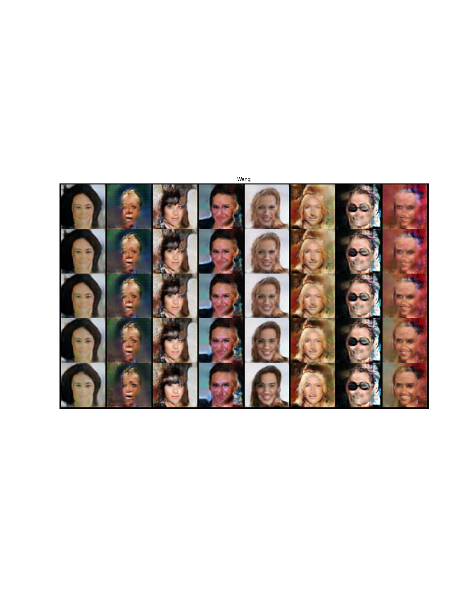
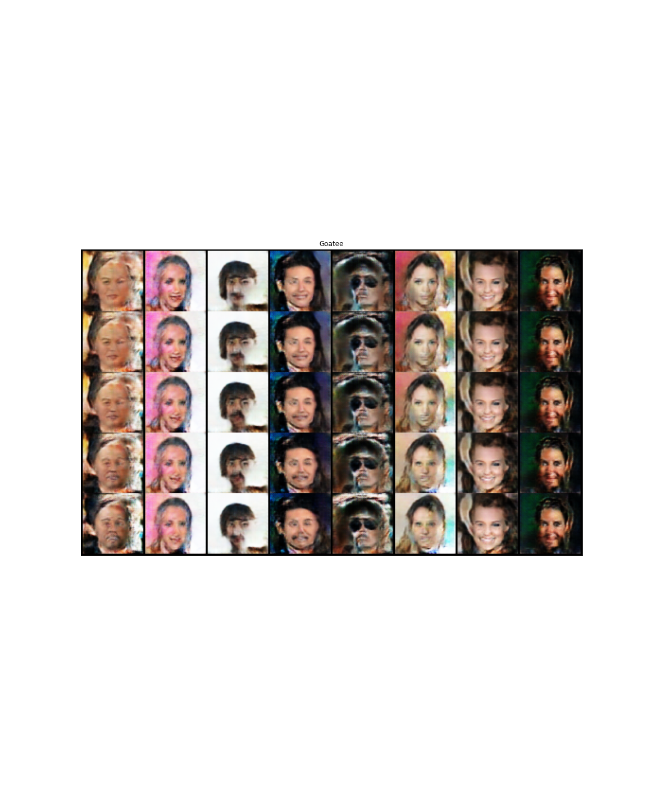

Controllable Generation
Controllable Generation
In this notebook, we're going to implement a GAN controllability method using gradients from a classifier. By training a classifier to recognize a relevant feature, we can use it to change the generator's inputs (z-vectors) to make it generate images with more or less of that feature.
We will be started we off with a pre-trained generator and classifier, so that we can focus on the controllability aspects.
The classifier has the same archicture as the earlier critic (remember that the discriminator/critic is simply a classifier used to classify real and fake).
CelebA
Instead of the MNIST dataset, we will be using CelebA. CelebA is a dataset of annotated celebrity images. Since they are colored (not black-and-white), the images have three channels for red, green, and blue (RGB). We'll be using the pre-built pytorch Celeba dataset.
Imports
# python
from argparse import Namespace
from collections import namedtuple
from functools import partial
from pathlib import Path
import pickle
# pypi
from torch import nn
from torch.utils.data import DataLoader
from torchvision import transforms
from torchvision.datasets import CelebA
from torchvision.utils import make_grid
import holoviews
import hvplot.pandas
import matplotlib.pyplot as pyplot
import pandas
import torch
# my stuff
from graeae import EmbedHoloviews, Timer
Set Up
The Timer
TIMER = Timer()
The Random Seed
torch.manual_seed(0)
Plotting
SLUG = "controllable-generation"
OUTPUT = f"files/posts/gans/{SLUG}/"
Embed = partial(EmbedHoloviews, folder_path=OUTPUT)
Plot = namedtuple("Plot", ["width", "height", "fontscale", "tan", "blue", "red"])
PLOT = Plot(
width=900,
height=750,
fontscale=2,
tan="#ddb377",
blue="#4687b7",
red="#ce7b6d",
)
Paths
base_path = Path("~/models/gans/celeba/").expanduser()
assert base_path.is_dir()
prebuilt_models = Namespace(
celeba = base_path/"pretrained_celeba.pth",
classifier = base_path/"pretrained_classifier.pth"
)
data_path = Path("~/pytorch-data/").expanduser()
if not data_path.is_dir():
data_path.mkdir()
assert prebuilt_models.celeba.is_file()
assert prebuilt_models.classifier.is_file()
Helpers
def save_tensor_images(image_tensor: torch.Tensor,
filename: str,
title: str,
folder: str=f"files/posts/gans{SLUG}/",
num_images: int=16, size: tuple=(1, 28, 28), nrow=3):
"""Plot an Image Tensor
Args:
image_tensor: tensor with the values for the image to plot
filename: name to save the file under
folder: path to put the file in
title: title for the image
num_images: how many images from the tensor to use
size: the dimensions for each image
"""
image_tensor = (image_tensor + 1) / 2
image_unflat = image_tensor.detach().cpu()
image_grid = make_grid(image_unflat[:num_images], nrow=nrow)
pyplot.title(title)
pyplot.grid(False)
pyplot.imshow(image_grid.permute(1, 2, 0).squeeze())
pyplot.tick_params(bottom=False, top=False, labelbottom=False,
right=False, left=False, labelleft=False)
pyplot.savefig(folder + filename)
print(f"[[file:{filename}]]")
return
The Generator
This is mostly the same as the other Generators but the images are now color so the channels are different and the model has more initial hidden nodes (and one extra hidden block).
class Generator(nn.Module):
"""Generator for the celeba images
Args:
z_dim: the dimension of the noise vector, a scalar
im_chan: the number of channels in the images, fitted for the dataset used, a scalar
(CelebA is rgb, so 3 is our default)
hidden_dim: the inner dimension, a scalar
"""
def __init__(self, z_dim: int=10, im_chan: int=3, hidden_dim: int=64):
super().__init__()
self.z_dim = z_dim
self.gen = nn.Sequential(
self.make_gen_block(z_dim, hidden_dim * 8),
self.make_gen_block(hidden_dim * 8, hidden_dim * 4),
self.make_gen_block(hidden_dim * 4, hidden_dim * 2),
self.make_gen_block(hidden_dim * 2, hidden_dim),
self.make_gen_block(hidden_dim, im_chan, kernel_size=4, final_layer=True),
)
def make_gen_block(self, input_channels: int, output_channels: int,
kernel_size: int=3, stride: int=2,
final_layer: bool=False) -> nn.Sequential:
"""Create a sequence of operations corresponding to a generator block of DCGAN
- a transposed convolution
- a batchnorm (except in the final layer)
- an activation.
Args:
input_channels: how many channels the input feature representation has
output_channels: how many channels the output feature representation should have
kernel_size: the size of each convolutional filter, equivalent to (kernel_size, kernel_size)
stride: the stride of the convolution
final_layer: a boolean, true if it is the final layer and false otherwise
(affects activation and batchnorm)
Returns:
sequence of layers
"""
if not final_layer:
return nn.Sequential(
nn.ConvTranspose2d(input_channels, output_channels, kernel_size, stride),
nn.BatchNorm2d(output_channels),
nn.ReLU(inplace=True),
)
else:
return nn.Sequential(
nn.ConvTranspose2d(input_channels, output_channels, kernel_size, stride),
nn.Tanh(),
)
def forward(self, noise: torch.Tensor) -> torch.Tensor:
"""Complete a forward pass of the generator
Args:
Parameters:
noise: a noise tensor with dimensions (n_samples, z_dim)
Returns:
generated images.
"""
x = noise.view(len(noise), self.z_dim, 1, 1)
return self.gen(x)
Noise Alias
I still don't get this…
get_noise = torch.randn
Classifier
class Classifier(nn.Module):
"""The Classifier (Discriminator)
Args:
im_chan: the number of channels in the images, fitted for the dataset used, a scalar
(CelebA is rgb, so 3 is our default)
n_classes: the total number of classes in the dataset, an integer scalar
hidden_dim: the inner dimension, a scalar
"""
def __init__(self, im_chan: int=3, n_classes: int=2, hidden_dim: int=64):
super().__init__()
self.classifier = nn.Sequential(
self.make_classifier_block(im_chan, hidden_dim),
self.make_classifier_block(hidden_dim, hidden_dim * 2),
self.make_classifier_block(hidden_dim * 2, hidden_dim * 4, stride=3),
self.make_classifier_block(hidden_dim * 4, n_classes, final_layer=True),
)
def make_classifier_block(self, input_channels: int, output_channels: int,
kernel_size: int=4, stride: int=2,
final_layer: bool=False) -> nn.Sequential:
"""Create a sequence of operations corresponding to a classifier block
- a convolution
- a batchnorm (except in the final layer)
- an activation (except in the final layer).
Args:
input_channels: how many channels the input feature representation has
output_channels: how many channels the output feature representation should have
kernel_size: the size of each convolutional filter, equivalent to (kernel_size, kernel_size)
stride: the stride of the convolution
final_layer: a boolean, true if it is the final layer and false otherwise
(affects activation and batchnorm)
Returns:
Sequence of layers
"""
if final_layer:
return nn.Sequential(
nn.Conv2d(input_channels, output_channels, kernel_size, stride),
)
else:
return nn.Sequential(
nn.Conv2d(input_channels, output_channels, kernel_size, stride),
nn.BatchNorm2d(output_channels),
nn.LeakyReLU(0.2, inplace=True),
)
def forward(self, image: torch.Tensor) -> torch.Tensor:
"""Complete a forward pass of the classifier
Args:
image: a flattened image tensor with im_chan channels
Returns:
an n_classes-dimension tensor representing fake/real.
"""
class_pred = self.classifier(image)
return class_pred.view(len(class_pred), -1)
Middle
Specifying Parameters
Before we begin training, we need to specify a few parameters:
- zdim: the dimension of the noise vector
- batchsize: the number of images per forward/backward pass
- device: the device type
z_dim = 64
batch_size = 128
device = 'cuda'
Train a Classifier
Note: the Celeba class will sometimes raise an exception:
Traceback (most recent call last):
File "/home/neurotic/download_celeba.py", line 27, in <module>
CelebA(data_path, split='train', download=True, transform=transform),
File "/home/neurotic/.conda/envs/neurotic-pytorch/lib/python3.9/site-packages/torchvision/datasets/celeba.py", line 77, in __init__
self.download()
File "/home/neurotic/.conda/envs/neurotic-pytorch/lib/python3.9/site-packages/torchvision/datasets/celeba.py", line 131, in download
with zipfile.ZipFile(os.path.join(self.root, self.base_folder, "img_align_celeba.zip"), "r") as f:
File "/home/neurotic/.conda/envs/neurotic-pytorch/lib/python3.9/zipfile.py", line 1257, in __init__
self._RealGetContents()
File "/home/neurotic/.conda/envs/neurotic-pytorch/lib/python3.9/zipfile.py", line 1324, in _RealGetContents
raise BadZipFile("File is not a zip file")
zipfile.BadZipFile: File is not a zip file
According to this bug report the problem is that the files are stored on Google Drive which has a limit on the amount of data you can download per day and if it's been exceeded then when you try to download =imgalignceleba.zip" instead of the zip file you get an HTML page (of the same name) with this message:
Sorry, you can't view or download this file at this time. Too many users have viewed or downloaded this file recently. Please try accessing the file again later. If the file you are trying to access is particularly large or is shared with many people, it may take up to 24 hours to be able to view or download the file. If you still can't access a file after 24 hours, contact your domain administrator.
The data is available on kaggle so if you download it from them and put the file where the bad file is it should work - except of course, it doesn't. It turns out that some of the text files were also replaced with warnings that the download limit was exceeded so I needed to download those as well, but the files on kaggle are formatted as comma-separated files while the original files are space-separated, but even replacing the commas with spaces won't pass the MD5 check - maybe the line endings are different too? Anyway, the images work so I just waited a day and downloaded the text files from the google drive, which seemed to fix it.
def train_classifier(filename: Path, data_path: Path, epochs: int=3,
learning_rate: float=0.001, display_step: int=500,
classifier: Classifier=None) -> list:
"""Trains the Classifier
Args:
filename: path to save the state-dict to
data_path: path to the celeba data
Returns:
classifier losses
"""
label_indices = range(40)
display_step = 500
beta_1 = 0.5
beta_2 = 0.999
image_size = 64
best_loss = float("inf")
transform = transforms.Compose([
transforms.Resize(image_size),
transforms.CenterCrop(image_size),
transforms.ToTensor(),
transforms.Normalize((0.5, 0.5, 0.5), (0.5, 0.5, 0.5)),
])
dataloader = DataLoader(
CelebA(str(data_path), split='train', download=False, transform=transform),
batch_size=batch_size,
shuffle=True)
if classifier is None:
classifier = Classifier(n_classes=len(label_indices)).to(device)
class_opt = torch.optim.Adam(classifier.parameters(), lr=learning_rate, betas=(beta_1, beta_2))
criterion = nn.BCEWithLogitsLoss()
cur_step = 0
classifier_losses = []
# classifier_val_losses = []
for epoch in range(epochs):
for real, labels in dataloader:
real = real.to(device)
labels = labels[:, label_indices].to(device).float()
class_opt.zero_grad()
class_pred = classifier(real)
class_loss = criterion(class_pred, labels)
class_loss.backward() # Calculate the gradients
class_opt.step() # Update the weights
classifier_losses += [class_loss.item()] # Keep track of the average classifier loss
## Visualization code ##
if classifier_losses[-1] < best_loss:
torch.save({"classifier": classifier.state_dict()}, filename)
best_loss = classifier_losses[-1]
if cur_step % display_step == 0 and cur_step > 0:
class_mean = sum(classifier_losses[-display_step:]) / display_step
print(f"Step {cur_step}: Classifier loss: {class_mean}")
step_bins = 20
cur_step += 1
return classifier_losses
classifier_state_dict = Path("~/models/gans/celeba/trained_classifier.pth").expanduser()
with TIMER:
classifier_losses = train_classifier(classifier_state_dict, data_path, epochs=100)
Started: 2021-05-10 16:52:26.506156 Step 500: Classifier loss: 0.2693843246996403 Step 1000: Classifier loss: 0.24250468423962593 Step 1500: Classifier loss: 0.2307623517513275 Step 2000: Classifier loss: 0.22525288465619087 Step 2500: Classifier loss: 0.22275795283913613 Step 3000: Classifier loss: 0.2154263758957386 Step 3500: Classifier loss: 0.21474265044927596 Step 4000: Classifier loss: 0.21102887812256813 Step 4500: Classifier loss: 0.20789319404959677 Step 5000: Classifier loss: 0.20887315857410432 Step 5500: Classifier loss: 0.20212965056300164 Step 6000: Classifier loss: 0.20280044555664062 Step 6500: Classifier loss: 0.20041452285647393 Step 7000: Classifier loss: 0.19656063199043275 Step 7500: Classifier loss: 0.19845477828383445 Step 8000: Classifier loss: 0.19205777409672736 Step 8500: Classifier loss: 0.19296112078428268 Step 9000: Classifier loss: 0.19257169529795648 Step 9500: Classifier loss: 0.18672975289821625 Step 10000: Classifier loss: 0.18999777460098266 Step 10500: Classifier loss: 0.18432555946707727 Step 11000: Classifier loss: 0.18430076670646667 Step 11500: Classifier loss: 0.18558891993761062 Step 12000: Classifier loss: 0.17852741411328316 Step 12500: Classifier loss: 0.18172698724269867 Step 13000: Classifier loss: 0.1773110607266426 Step 13500: Classifier loss: 0.17672735232114792 Step 14000: Classifier loss: 0.17991324526071548 Step 14500: Classifier loss: 0.17025035387277604 Step 15000: Classifier loss: 0.17529139894247056 Step 15500: Classifier loss: 0.17104978796839715 Step 16000: Classifier loss: 0.17034502020478248 Step 16500: Classifier loss: 0.17325083956122397 Step 17000: Classifier loss: 0.1642009498178959 Step 17500: Classifier loss: 0.16845661264657974 Step 18000: Classifier loss: 0.1664019832611084 Step 18500: Classifier loss: 0.1633680825829506 Step 19000: Classifier loss: 0.16797509816288947 Step 19500: Classifier loss: 0.15925687023997306 Step 20000: Classifier loss: 0.16292004188895226 Step 20500: Classifier loss: 0.16216046965122222 Step 21000: Classifier loss: 0.15743515598773955 Step 21500: Classifier loss: 0.16243972438573837 Step 22000: Classifier loss: 0.1545857997238636 Step 22500: Classifier loss: 0.15797922548651694 Step 23000: Classifier loss: 0.15804208835959435 Step 23500: Classifier loss: 0.15213489854335785 Step 24000: Classifier loss: 0.15730918619036674 Step 24500: Classifier loss: 0.1511693196296692 Step 25000: Classifier loss: 0.1527680770754814 Step 25500: Classifier loss: 0.15510675182938577 Step 26000: Classifier loss: 0.14683012741804122 Step 26500: Classifier loss: 0.15305917632579805 Step 27000: Classifier loss: 0.14754199008643626 Step 27500: Classifier loss: 0.14820717003941536 Step 28000: Classifier loss: 0.15238315638899802 Step 28500: Classifier loss: 0.14171919177472592 Step 29000: Classifier loss: 0.14881789454817773 Step 29500: Classifier loss: 0.1449408364146948 Step 30000: Classifier loss: 0.1441956951916218 Step 30500: Classifier loss: 0.1483478535115719 Step 31000: Classifier loss: 0.13893532317876817 Step 31500: Classifier loss: 0.1450331158787012 Step 32000: Classifier loss: 0.14139907719194889 Step 32500: Classifier loss: 0.1396861730515957 Step 33000: Classifier loss: 0.1451952086240053 Step 33500: Classifier loss: 0.1358419010192156 Step 34000: Classifier loss: 0.14111693547666074 Step 34500: Classifier loss: 0.1400791739821434 Step 35000: Classifier loss: 0.1358947957903147 Step 35500: Classifier loss: 0.14151665523648263 Step 36000: Classifier loss: 0.1336766537129879 Step 36500: Classifier loss: 0.13722201707959175 Step 37000: Classifier loss: 0.1379301232844591 Step 37500: Classifier loss: 0.13219603390991688 Step 38000: Classifier loss: 0.13811730867624283 Step 38500: Classifier loss: 0.13158722695708275 Step 39000: Classifier loss: 0.13359902986884117 Step 39500: Classifier loss: 0.1366793801188469 Step 40000: Classifier loss: 0.12849617034196853 Step 40500: Classifier loss: 0.13549049003422262 Step 41000: Classifier loss: 0.12929423077404498 Step 41500: Classifier loss: 0.13080933578312398 Step 42000: Classifier loss: 0.13500430592894555 Step 42500: Classifier loss: 0.12454062223434448 Step 43000: Classifier loss: 0.13214491476118564 Step 43500: Classifier loss: 0.1284936859458685 Step 44000: Classifier loss: 0.12763021168112754 Step 44500: Classifier loss: 0.13298917169868946 Step 45000: Classifier loss: 0.12208985219895839 Step 45500: Classifier loss: 0.129048362582922 Step 46000: Classifier loss: 0.12678204217553138 Step 46500: Classifier loss: 0.12455842156708241 Step 47000: Classifier loss: 0.1303500325381756 Step 47500: Classifier loss: 0.12025414818525314 Step 48000: Classifier loss: 0.12684993542730807 Step 48500: Classifier loss: 0.1252559674978256 Step 49000: Classifier loss: 0.12153738121688366 Step 49500: Classifier loss: 0.12777481034398078 Step 50000: Classifier loss: 0.118936713129282 Step 50500: Classifier loss: 0.12405500474572181 Ended: 2021-05-10 18:56:36.980805 Elapsed: 2:04:10.474649
losses = pandas.DataFrame.from_dict(dict(Loss=classifier_losses))
plot = losses.hvplot(y="Loss", title="Classifier Loss", color=PLOT.tan).opts(width=PLOT.width, height=PLOT.height)
output = Embed(plot=plot, file_name="classifier_loss")()
print(output)
Take Two
n_classes = 40
classifier = Classifier(n_classes=n_classes).to(device)
class_dict = torch.load(classifier_state_dict, map_location=torch.device(device))["classifier"]
classifier.load_state_dict(class_dict)
classifier.eval()
with TIMER:
classifier_losses = train_classifier(classifier_state_dict, data_path,
epochs=40,
classifier=classifier)
Started: 2021-05-11 16:02:16.181203 Step 500: Classifier loss: 0.1181784438341856 Step 1000: Classifier loss: 0.12448641647398472 Step 1500: Classifier loss: 0.1214247584193945 Step 2000: Classifier loss: 0.1198666417747736 Step 2500: Classifier loss: 0.1255625690817833 Step 3000: Classifier loss: 0.11589906251430511 Step 3500: Classifier loss: 0.12224359685182572 Step 4000: Classifier loss: 0.11944249965250492 Step 4500: Classifier loss: 0.1175859476029873 Step 5000: Classifier loss: 0.12318077574670315 Step 5500: Classifier loss: 0.11450052106380462 Step 6000: Classifier loss: 0.11944048409163951 Step 6500: Classifier loss: 0.11928777326643467 Step 7000: Classifier loss: 0.11463624723255635 Step 7500: Classifier loss: 0.12107200682163238 Step 8000: Classifier loss: 0.11355004295706748 Step 8500: Classifier loss: 0.11719673483073711 Step 9000: Classifier loss: 0.11821492326259612 Step 9500: Classifier loss: 0.11198448015749454 Step 10000: Classifier loss: 0.11870198084414005 Step 10500: Classifier loss: 0.11221958647668362 Step 11000: Classifier loss: 0.11476752410829068 Step 11500: Classifier loss: 0.11772396117448806 Step 12000: Classifier loss: 0.10936097744107247 Step 12500: Classifier loss: 0.11677812692523003 Step 13000: Classifier loss: 0.11107682411372662 Step 13500: Classifier loss: 0.11222303664684295 Step 14000: Classifier loss: 0.11760448211431504 Step 14500: Classifier loss: 0.10662877394258977 Step 15000: Classifier loss: 0.11471863305568696 Step 15500: Classifier loss: 0.11056565625965595 Step 16000: Classifier loss: 0.11046012189984322 Step 16500: Classifier loss: 0.1158019468486309 Step 17000: Classifier loss: 0.10568901741504669 Step 17500: Classifier loss: 0.11223984396457672 Step 18000: Classifier loss: 0.11002579489350318 Step 18500: Classifier loss: 0.10752195838093757 Step 19000: Classifier loss: 0.11419818633794784 Step 19500: Classifier loss: 0.10464896529912948 Step 20000: Classifier loss: 0.11005591739714146 Step 20500: Classifier loss: 0.10996675519645215 Step 21000: Classifier loss: 0.10543355357646943 Step 21500: Classifier loss: 0.11205300988256932 Step 22000: Classifier loss: 0.1038715885579586 Step 22500: Classifier loss: 0.10818033437430859 Step 23000: Classifier loss: 0.10912492156028747 Step 23500: Classifier loss: 0.10302072758972645 Step 24000: Classifier loss: 0.11008756360411644 Step 24500: Classifier loss: 0.10342664630711079 Step 25000: Classifier loss: 0.10618587562441825 Step 25500: Classifier loss: 0.10913233712315559 Step 26000: Classifier loss: 0.10061963592469693 Step 26500: Classifier loss: 0.10828037586808205 Step 27000: Classifier loss: 0.10266246040165425 Step 27500: Classifier loss: 0.1047897623181343 Step 28000: Classifier loss: 0.10866250747442245 Step 28500: Classifier loss: 0.09820086953043938 Step 29000: Classifier loss: 0.10674160474538803 Step 29500: Classifier loss: 0.10230921612679958 Step 30000: Classifier loss: 0.1021555609256029 Step 30500: Classifier loss: 0.10775842162966728 Step 31000: Classifier loss: 0.09722121758759021 Step 31500: Classifier loss: 0.10439497400820255 Step 32000: Classifier loss: 0.10229390095174312 Step 32500: Classifier loss: 0.10003190772235393 Step 33000: Classifier loss: 0.10617333140969276 Step 33500: Classifier loss: 0.09686395044624806 Step 34000: Classifier loss: 0.10285020883381367 Step 34500: Classifier loss: 0.10199978332221508 Step 35000: Classifier loss: 0.09819360673427582 Step 35500: Classifier loss: 0.10397693109512329 Step 36000: Classifier loss: 0.09642438031733036 Step 36500: Classifier loss: 0.10087257397174836 Step 37000: Classifier loss: 0.10197833214700222 Step 37500: Classifier loss: 0.09598418261110783 Step 38000: Classifier loss: 0.10283542364835739 Step 38500: Classifier loss: 0.09644483177363873 Step 39000: Classifier loss: 0.09908602401614189 Step 39500: Classifier loss: 0.10129908196628094 Step 40000: Classifier loss: 0.0939527989178896 Step 40500: Classifier loss: 0.1016722819507122 Step 41000: Classifier loss: 0.09578396078944207 Step 41500: Classifier loss: 0.09706279496848583 Step 42000: Classifier loss: 0.10207961940765381 Step 42500: Classifier loss: 0.09211373472213745 Step 43000: Classifier loss: 0.09958744782209396 Step 43500: Classifier loss: 0.09534277887642384 Step 44000: Classifier loss: 0.0952163600474596 Step 44500: Classifier loss: 0.10136887782812118 Step 45000: Classifier loss: 0.09021547995507717 Step 45500: Classifier loss: 0.09812712541222572 Step 46000: Classifier loss: 0.09560927426815033 Step 46500: Classifier loss: 0.09358323478698731 Step 47000: Classifier loss: 0.09991893386840821 Step 47500: Classifier loss: 0.0899157041311264 Step 48000: Classifier loss: 0.096542285323143 Step 48500: Classifier loss: 0.09535252919793129 Step 49000: Classifier loss: 0.09194727616012097 Step 49500: Classifier loss: 0.09831891848146915 Step 50000: Classifier loss: 0.0901611197590828 Step 50500: Classifier loss: 0.09490065774321556 Ended: 2021-05-11 18:06:19.399986 Elapsed: 2:04:03.218783
losses = pandas.DataFrame.from_dict(dict(Loss=classifier_losses))
plot = losses.hvplot(y="Loss", title="Classifier Loss Session 2", color=PLOT.tan).opts(width=PLOT.width, height=PLOT.height)
output = Embed(plot=plot, file_name="classifier_loss_2")()
print(output)
Take Three
n_classes = 40
classifier = Classifier(n_classes=n_classes).to(device)
class_dict = torch.load(classifier_state_dict, map_location=torch.device(device))["classifier"]
classifier.load_state_dict(class_dict)
classifier.eval()
with TIMER:
classifier_losses = train_classifier(classifier_state_dict, data_path,
epochs=40,
classifier=classifier)
Started: 2021-05-11 21:11:32.420506 Step 500: Classifier loss: 0.09006546361744404 Step 1000: Classifier loss: 0.09647199404239655 Step 1500: Classifier loss: 0.092734768897295 Step 2000: Classifier loss: 0.09196118661761284 Step 2500: Classifier loss: 0.09789373110234738 Step 3000: Classifier loss: 0.08788785541057587 Step 3500: Classifier loss: 0.0945415845811367 Step 4000: Classifier loss: 0.09308994428813458 Step 4500: Classifier loss: 0.09022623193264008 Step 5000: Classifier loss: 0.09615834753215313 Step 5500: Classifier loss: 0.08742603194713593 Step 6000: Classifier loss: 0.09316775412857532 Step 6500: Classifier loss: 0.09275233449041843 Step 7000: Classifier loss: 0.08822614887356758 Step 7500: Classifier loss: 0.09528714890778064 Step 8000: Classifier loss: 0.08681275172531605 Step 8500: Classifier loss: 0.09150236696004868 Step 9000: Classifier loss: 0.09338522186875343 Step 9500: Classifier loss: 0.08638478130102158 Step 10000: Classifier loss: 0.09388372772932052 Step 10500: Classifier loss: 0.08720742921531201 Step 11000: Classifier loss: 0.09009483934938908 Step 11500: Classifier loss: 0.0929495030939579 Step 12000: Classifier loss: 0.08460890363156795 Step 12500: Classifier loss: 0.0924714410007 Step 13000: Classifier loss: 0.08704712373018265 Step 13500: Classifier loss: 0.08819058662652969 Step 14000: Classifier loss: 0.09366303083300591 Step 14500: Classifier loss: 0.08295501434803008 Step 15000: Classifier loss: 0.09084490737318993 Step 15500: Classifier loss: 0.08707242746651173 Step 16000: Classifier loss: 0.08690852355957031 Step 16500: Classifier loss: 0.09254233407974242 Step 17000: Classifier loss: 0.08242024271190167 Step 17500: Classifier loss: 0.08904271678626538 Step 18000: Classifier loss: 0.08771026766300201 Step 18500: Classifier loss: 0.08471861970424652 Step 19000: Classifier loss: 0.09134728060662746 Step 19500: Classifier loss: 0.08233513435721397 Step 20000: Classifier loss: 0.08778411850333213 Step 20500: Classifier loss: 0.08791485584527255 Step 21000: Classifier loss: 0.08345357306301594 Step 21500: Classifier loss: 0.08975999920070171 Step 22000: Classifier loss: 0.08225472408533097 Step 22500: Classifier loss: 0.08668080273270606 Step 23000: Classifier loss: 0.08786206224560737 Step 23500: Classifier loss: 0.08155409483611584 Step 24000: Classifier loss: 0.08907847443222999 Step 24500: Classifier loss: 0.08202618369460106 Step 25000: Classifier loss: 0.08517973597347736 Step 25500: Classifier loss: 0.08817093770205975 Step 26000: Classifier loss: 0.08008052316308022 Step 26500: Classifier loss: 0.08741954331099987 Step 27000: Classifier loss: 0.08247932478785515 Step 27500: Classifier loss: 0.08377225384116173 Step 28000: Classifier loss: 0.08846944206953049 Step 28500: Classifier loss: 0.07859189368784428 Step 29000: Classifier loss: 0.08617163190245629 Step 29500: Classifier loss: 0.0824531610161066 Step 30000: Classifier loss: 0.08195052224397659 Step 30500: Classifier loss: 0.08803890940546989 Step 31000: Classifier loss: 0.07793828934431075 Step 31500: Classifier loss: 0.08464510484039783 Step 32000: Classifier loss: 0.08275749842077494 Step 32500: Classifier loss: 0.0805082704871893 Step 33000: Classifier loss: 0.08703124921023846 Step 33500: Classifier loss: 0.0772736611738801 Step 34000: Classifier loss: 0.08353734220564366 Step 34500: Classifier loss: 0.08343685203790664 Step 35000: Classifier loss: 0.07905932680517436 Step 35500: Classifier loss: 0.08568261863291264 Step 36000: Classifier loss: 0.07762402860075235 Step 36500: Classifier loss: 0.08223582464456558 Step 37000: Classifier loss: 0.08341778349876404 Step 37500: Classifier loss: 0.07801838412880897 Step 38000: Classifier loss: 0.0842266542762518 Step 38500: Classifier loss: 0.07764634099602699 Step 39000: Classifier loss: 0.08104524739086628 Step 39500: Classifier loss: 0.08389902476221323 Step 40000: Classifier loss: 0.07612183248996734 Step 40500: Classifier loss: 0.08296740844845772 Step 41000: Classifier loss: 0.0781253460124135 Step 41500: Classifier loss: 0.07980525248497725 Step 42000: Classifier loss: 0.08405549557507039 Step 42500: Classifier loss: 0.0743530157059431 Step 43000: Classifier loss: 0.08219673927128315 Step 43500: Classifier loss: 0.07845095673948527 Step 44000: Classifier loss: 0.07780187250673772 Step 44500: Classifier loss: 0.08399353076517582 Step 45000: Classifier loss: 0.07365029990673065 Step 45500: Classifier loss: 0.0808380290567875 Step 46000: Classifier loss: 0.0786423703506589 Step 46500: Classifier loss: 0.07693013155460357 Step 47000: Classifier loss: 0.08244228959083558 Step 47500: Classifier loss: 0.07365631985664367 Step 48000: Classifier loss: 0.07970952866971492 Step 48500: Classifier loss: 0.07868134459108114 Step 49000: Classifier loss: 0.07539512529224157 Step 49500: Classifier loss: 0.08191524033248425 Step 50000: Classifier loss: 0.07361406400799751 Step 50500: Classifier loss: 0.07847459720075131 Ended: 2021-05-11 23:15:24.444278 Elapsed: 2:03:52.023772
losses = pandas.DataFrame.from_dict(dict(Loss=classifier_losses))
plot = losses.hvplot(y="Loss", title="Classifier Loss Session 3", color=PLOT.tan).opts(width=PLOT.width, height=PLOT.height)
output = Embed(plot=plot, file_name="classifier_loss_3")()
print(output)
Loading the Pretrained Models
We will then load the pretrained generator and classifier using the following code. (If we trained our own classifier, we can load that one here instead.)
import torch
gen = Generator(z_dim).to(device)
gen_dict = torch.load(prebuilt_models.celeba, map_location=torch.device(device))["gen"]
gen.load_state_dict(gen_dict)
gen.eval()
n_classes = 40
classifier = Classifier(n_classes=n_classes).to(device)
class_dict = torch.load(prebuilt_models.classifier, map_location=torch.device(device))["classifier"]
classifier.load_state_dict(class_dict)
classifier.eval()
opt = torch.optim.Adam(classifier.parameters(), lr=0.01)
Training
Now we can start implementing a method for controlling our GAN.
Update Noise
For training, we need to write the code to update the noise to produce more of our desired feature. We do this by performing stochastic gradient ascent. We use stochastic gradient ascent to find the local maxima, as opposed to stochastic gradient descent which finds the local minima. Gradient ascent is gradient descent over the negative of the value being optimized. Their formulas are essentially the same, however, instead of subtracting the weighted value, stochastic gradient ascent adds it; it can be calculated by \(new = old + (∇ old * weight)\), where ∇ is the gradient of old. We perform stochastic gradient ascent to try and maximize the amount of the feature we want. If we wanted to reduce the amount of the feature, we would perform gradient descent. However, in this assignment we are interested in maximize our feature using gradient ascent, since many features in the dataset are not present much more often than they're present and we are trying to add a feature to the images, not remove.
Given the noise with its gradient already calculated through the classifier, we want to return the new noise vector.
- Remember the equation for gradient ascent: \(new = old + (∇ old * weight)\).
def calculate_updated_noise(noise: torch.Tensor, weight: float) -> torch.Tensor:
"""Update noise vectors with stochastic gradient ascent.
Args:
noise: the current noise vectors.
We have already called the backwards function on the target class
so we can access the gradient of the output class with respect
to the noise by using noise.grad
weight: the scalar amount by which we should weight the noise gradient
Returns:
updated noise
"""
new_noise = noise + (noise.grad * weight)
return new_noise
- UNIT TEST
Check that the basic function works.
opt.zero_grad() noise = torch.ones(20, 20) * 2 noise.requires_grad_() fake_classes = (noise ** 2).mean() fake_classes.backward() new_noise = calculate_updated_noise(noise, 0.1) assert type(new_noise) == torch.Tensor assert tuple(new_noise.shape) == (20, 20) assert new_noise.max() == 2.0010 assert new_noise.min() == 2.0010 assert torch.isclose(new_noise.sum(), torch.tensor(0.4) + 20 * 20 * 2)
Check that it works for generated images
opt.zero_grad() noise = get_noise(32, z_dim).to(device).requires_grad_() fake = gen(noise) fake_classes = classifier(fake)[:, 0] fake_classes.mean().backward() noise.data = calculate_updated_noise(noise, 0.01) fake = gen(noise) fake_classes_new = classifier(fake)[:, 0] assert torch.all(fake_classes_new > fake_classes)
Generation
Now, we can use the classifier along with stochastic gradient ascent to make noise that generates more of a certain feature. In the code given to us here, we can generate smiling faces. Feel free to change the target index and control some of the other features in the list! We will notice that some features are easier to detect and control than others.
The list we have here are the features labeled in CelebA, which we used to train our classifier. If we wanted to control another feature, we would need to get data that is labeled with that feature and train a classifier on that feature.
First generate a bunch of images with the generator.
n_images = 8
fake_image_history = []
grad_steps = 10 # Number of gradient steps to take
skip = 2 # Number of gradient steps to skip in the visualization
feature_names = ["5oClockShadow", "ArchedEyebrows", "Attractive", "BagsUnderEyes", "Bald", "Bangs",
"BigLips", "BigNose", "BlackHair", "BlondHair", "Blurry", "BrownHair", "BushyEyebrows", "Chubby",
"DoubleChin", "Eyeglasses", "Goatee", "GrayHair", "HeavyMakeup", "HighCheekbones", "Male",
"MouthSlightlyOpen", "Mustache", "NarrowEyes", "NoBeard", "OvalFace", "PaleSkin", "PointyNose",
"RecedingHairline", "RosyCheeks", "Sideburn", "Smiling", "StraightHair", "WavyHair", "WearingEarrings",
"WearingHat", "WearingLipstick", "WearingNecklace", "WearingNecktie", "Weng"]
### Change me! ###
target_indices = feature_names.index("Weng") # Feel free to change this value to any string from feature_names!
noise = get_noise(n_images, z_dim).to(device).requires_grad_()
for i in range(grad_steps):
opt.zero_grad()
fake = gen(noise)
fake_image_history += [fake]
fake_classes_score = classifier(fake)[:, target_indices].mean()
fake_classes_score.backward()
noise.data = calculate_updated_noise(noise, 1 / grad_steps)
pyplot.rcParams['figure.figsize'] = [n_images * 2, grad_steps * 2]
save_tensor_images(image_tensor=torch.cat(fake_image_history[::skip], dim=2),
filename="weng.png", folder=OUTPUT, title="Weng",
num_images=n_images, nrow=n_images)

Entanglement and Regularization
We may also notice that sometimes more features than just the target feature change. This is because some features are entangled. To fix this, we can try to isolate the target feature more by holding the classes outside of the target class constant. One way we can implement this is by penalizing the differences from the original class with L2 regularization. This L2 regularization would apply a penalty for this difference using the L2 norm and this would just be an additional term on the loss function.
Here, we'll have to implement the score function: the higher, the better. The score is calculated by adding the target score and a penalty – note that the penalty is meant to lower the score, so it should have a negative value.
For every non-target class, take the difference between the current noise and the old noise. The greater this value is, the more features outside the target have changed. We will calculate the magnitude of the change, take the mean, and negate it. Finally, add this penalty to the target score. The target score is the mean of the target class in the current noise.
- The higher the score, the better!
- We want to calculate the loss per image, so we'll need to pass a dim argument to
torch.norm. - Calculating the magnitude of the change requires we to take the norm of the difference between the classifications, not the difference of the norms.
Note: torch.norm is deprecated, they want you to use torch.linalg.norm instead.
def get_score(current_classifications: torch.Tensor,
original_classifications: torch.Tensor,
target_indices: torch.Tensor,
other_indices: torch.Tensor,
penalty_weight: float) -> torch.Tensor:
"""Score the current classifications, L2 Norm penalty
Args:
current_classifications: the classifications associated with the current noise
original_classifications: the classifications associated with the original noise
target_indices: the index of the target class
other_indices: the indices of the other classes
penalty_weight: the amount that the penalty should be weighted in the overall score
Returns:
the score of the current classification with L2 Norm penalty
"""
# Steps: 1) Calculate the change between the original and current classifications (as a tensor)
# by indexing into the other_indices we're trying to preserve, like in x[:, features].
# 2) Calculate the norm (magnitude) of changes per example.
# 3) Multiply the mean of the example norms by the penalty weight.
# This will be our other_class_penalty.
# Make sure to negate the value since it's a penalty!
# 4) Take the mean of the current classifications for the target feature over all the examples.
# This mean will be our target_score.
# Calculate the norm (magnitude) of changes per example and multiply by penalty weight
other_class_penalty = -(torch.mean(
torch.linalg.norm(original_classifications[:, other_indices]
- current_classifications[:, other_indices], dim=1))
* penalty_weight)
# Take the mean of the current classifications for the target feature
target_score = torch.mean(current_classifications[:, target_indices])
return target_score + other_class_penalty
UNIT TEST
assert torch.isclose(
get_score(torch.ones(4, 3), torch.zeros(4, 3), [0], [1, 2], 0.2),
1 - torch.sqrt(torch.tensor(2.)) * 0.2
)
rows = 10
current_class = torch.tensor([[1] * rows, [2] * rows, [3] * rows, [4] * rows]).T.float()
original_class = torch.tensor([[1] * rows, [2] * rows, [3] * rows, [4] * rows]).T.float()
# Must be 3
assert get_score(current_class, original_class, [1, 3] , [0, 2], 0.2).item() == 3
current_class = torch.tensor([[1] * rows, [2] * rows, [3] * rows, [4] * rows]).T.float()
original_class = torch.tensor([[4] * rows, [4] * rows, [2] * rows, [1] * rows]).T.float()
# Must be 3 - 0.2 * sqrt(10)
assert torch.isclose(get_score(current_class, original_class, [1, 3] , [0, 2], 0.2),
-torch.sqrt(torch.tensor(10.0)) * 0.2 + 3)
In the following block of code, we will run the gradient ascent with this new score function. We might notice a few things after running it:
- It may fail more often at producing the target feature when compared to the original approach. This suggests that the model may not be able to generate an image that has the target feature without changing the other features. This makes sense! For example, it may not be able to generate a face that's smiling but whose mouth is NOT slightly open. This may also expose a limitation of the generator.
Alternatively, even if the generator can produce an image with the intended features, it might require many intermediate changes to get there and may get stuck in a local minimum.
- This process may change features which the classifier was not trained to recognize since there is no way to penalize them with this method. Whether it's possible to train models to avoid changing unsupervised features is an open question.
fake_image_history = []
### Change me! ###
target_indices = feature_names.index("Goatee") # Feel free to change this value to any string from feature_names from earlier!
other_indices = [cur_idx != target_indices for cur_idx, _ in enumerate(feature_names)]
noise = get_noise(n_images, z_dim).to(device).requires_grad_()
original_classifications = classifier(gen(noise)).detach()
for i in range(grad_steps):
opt.zero_grad()
fake = gen(noise)
fake_image_history += [fake]
fake_score = get_score(
classifier(fake),
original_classifications,
target_indices,
other_indices,
penalty_weight=0.1
)
fake_score.backward()
noise.data = calculate_updated_noise(noise, 1 / grad_steps)
pyplot.rcParams['figure.figsize'] = [n_images * 2, grad_steps * 2]
save_tensor_images(torch.cat(fake_image_history[::skip], dim=2), num_images=n_images, nrow=n_images, filename="goatee.png", folder=OUTPUT, title="Goatee")

End
Sources
- Liu, Z, Luo, P, Wang, X, Tang, X, Deep Learning Face Attributes in the Wild. In Proceedings of International Conference on Computer Vision (ICCV) 2015 .